Enviar Retenciones
Ubique y seleccione en el menú de ADempiere, la carpeta “Manejo de Retenciones”, luego seleccione la ventana de búsqueda inteligente “Enviar Retenciones”.
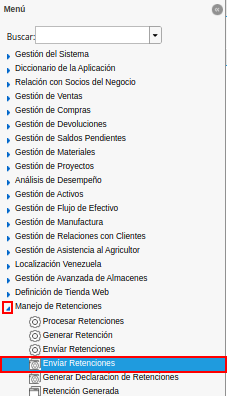
Imagen 1. Menú de ADempiere
Podrá visualizar la ventana de búsqueda inteligente “Enviar Retenciones”, con diferentes campos que le permiten al usuario, filtrar la información para ejecutar el proceso en base a lo requerido por el mismo.
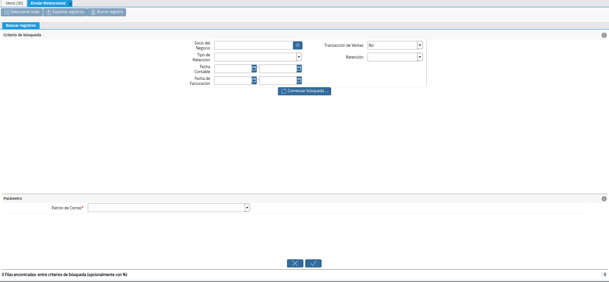
Imagen 2. Ventana de Búsqueda Inteligente Enviar Retenciones
Seleccione en el campo “Socio del Negocio”, el socio del negocio requerido para filtrar la información.
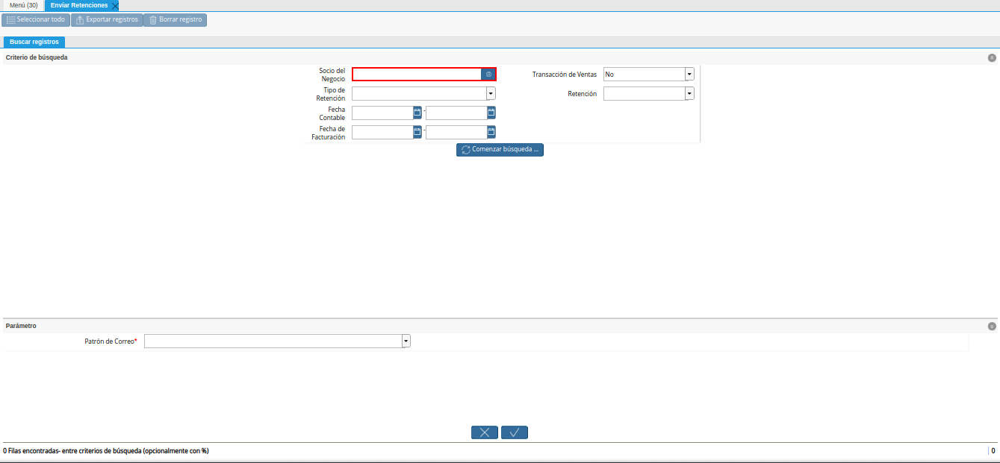
Imagen 3. Campo Socio del Negocio
Indique en el campo “Transacciones de Ventas”, si requiere filtrar la información por transacciones de ventas.
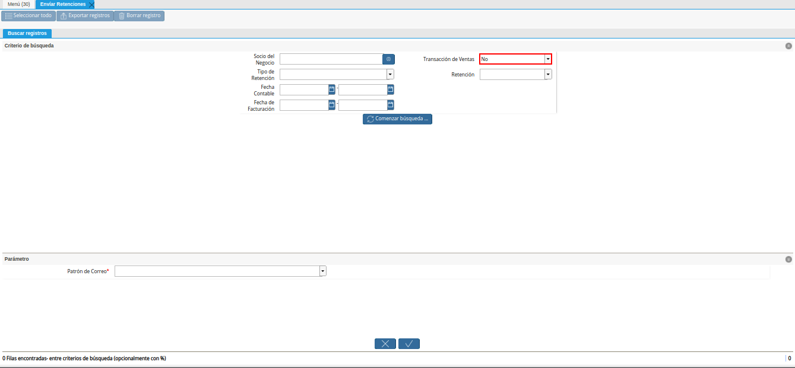
Imagen 4. Campo Transacciones de Ventas
Seleccione en el campo “Tipo de Retención”, el tipo de retención requerido para filtrar la información.
Imagen 5. Campo Tipo de Retención
Seleccione en el campo “Retención”, la retención requerida para filtrar la información.
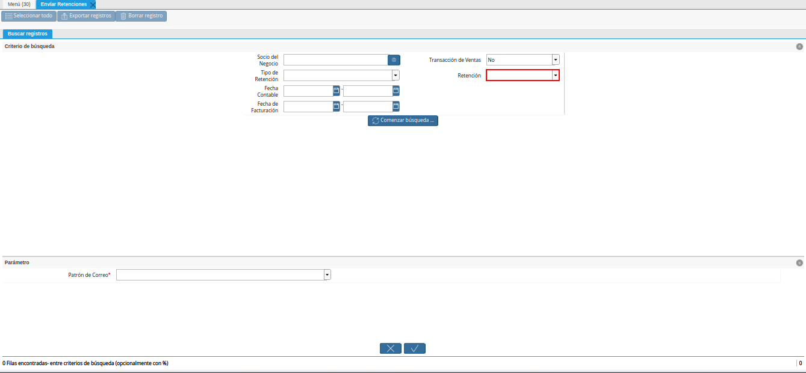
Imagen 6. Campo Retención
Seleccione en el campo “Fecha Contable”, el rango de fecha contable por el cual requiere filtrar la información.
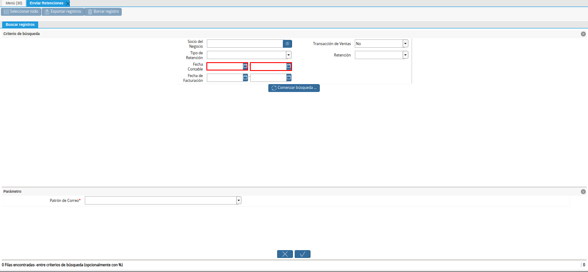
Imagen 7. Campo Fecha Contable
Seleccione en el campo “Fecha de Facturación”, el rango de fecha de facturación por el cual requiere filtrar la información.
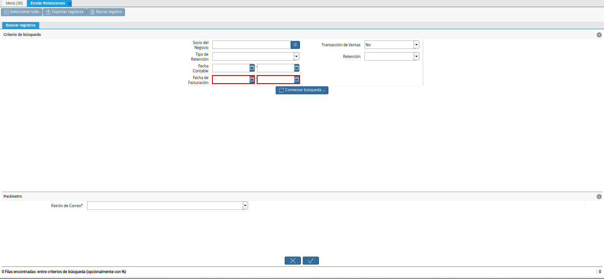
Imagen 8. Campo Fecha de Facturación
Seleccione la opción “Comenzar Búsqueda”, para filtrar la información en base a los campos indicados anteriormente.
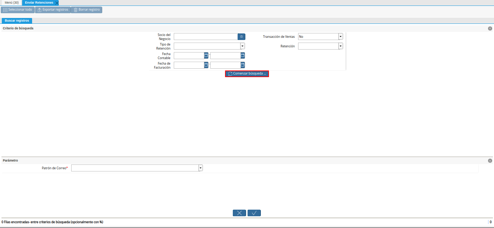
Imagen 9. Opción Comenzar Búsqueda
Seleccione el registro del documento de retención que requiere enviar por correo electrónico.
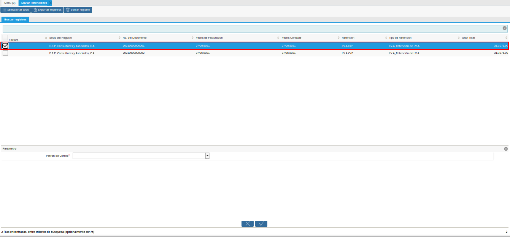
Imagen 10. Selección de Retención
Indique en el campo “Patrón de Correo”, la plantilla de correo para enviar la retención.
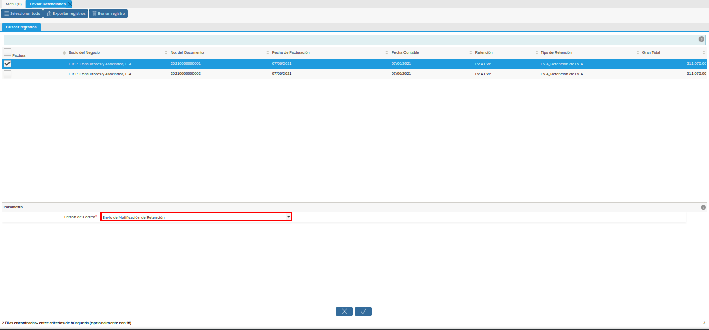
Imagen 11. Campo Patrón de Correo
Seleccione la opción “OK”, para ejecutar el proceso y enviar la retención previamente seleccionada.
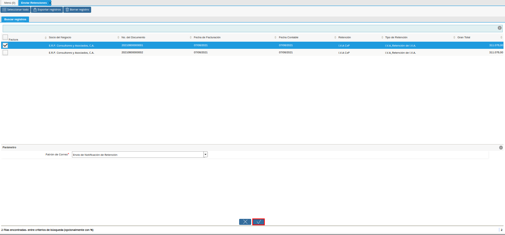
Imagen 12. Opción OK para Enviar Retención
Podrá visualizar en la parte inferior izquierda de la ventana de búsqueda inteligente, el resultado del proceso.
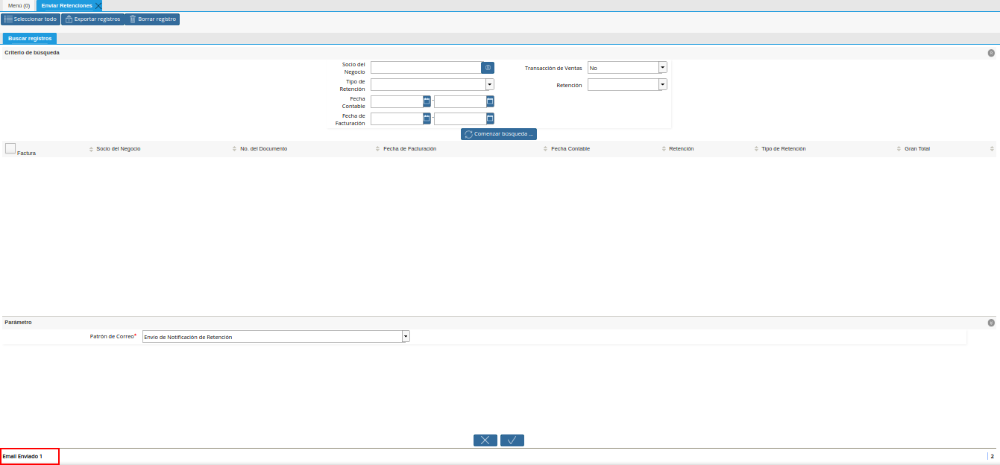
Imagen 13. Resultado del Proceso
Finalmente, al acceder al correo electrónico y ubicar los mensajes enviados, podrá visualizar el correo enviado desde ADempiere.
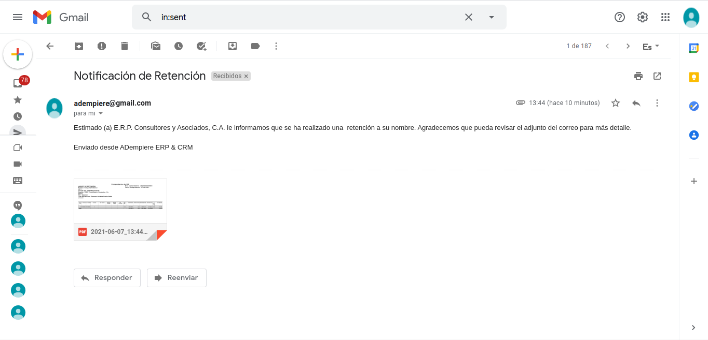
Imagen 14. Correo Enviado